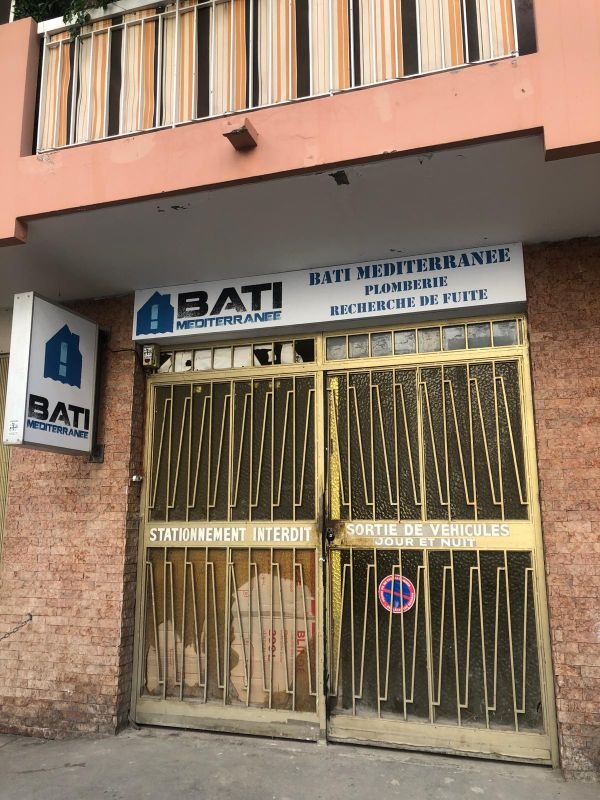
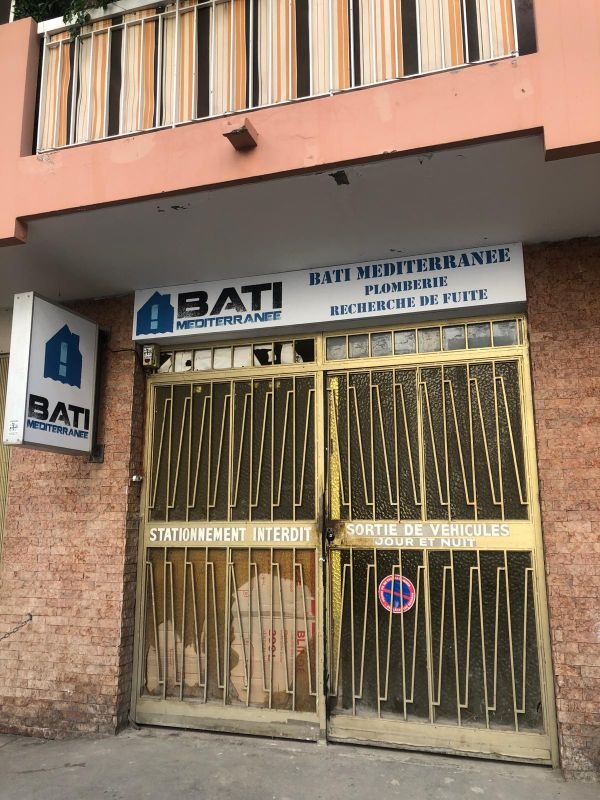

Stage orange (4eme)
Stagiaire
Job d'été - Bati Mediterannee - Nice
Bureautique

Alternance - Azuradiologie
Alternance en cours de réalisation
Stages, alternances et emplois liés au domaine informatique.
Stagiaire
Bureautique
Alternance en cours de réalisation